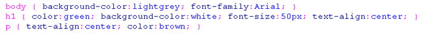

@sandhikagalih | Teknik Informatika UNPAS
CSS
Adalah Sebuah script yang dapat mengatur dan mengontrol tampilan halaman web serta memisahkan antara tampilan dan konten halaman web.
Berikut adalah salah satu contoh pemanfaatan CSS dalam membuat sebuah animasi sederhana.
Struktur Penulisan CSS
Dalam menggunakan CSS terdapat struktur yang harus anda ikuti, struktur ini digunakan agar browser mengerti apa yang anda ketikan. Berikut ini adalah struktur penulisan sebuah script CSS.
akses CSS
ada 3 cara mengakses CSS yaitu- Inline
Style CSS digunakan langsung di dalam tag HTML
- Internal Link
Style CSS diletakkan di halaman HTML. Biasanya terdapat di dalam tag <head>
- Eksternal Link
Semua deklarasi disatukan dalam satu file *.css. Cara memanggil file css di dalam html :
<link rel=stylesheet type="text/css" href="style.css">
baris tersebut disimpan di dalam tag head.
Lalu script css dibuat di file lain yang dipanggil oleh file htmlnya. Contoh isi dari file css tersebut adalah sebagai berikut: 
Class-Id
Setiap style css dibedakan berdasarkan selectornya. Terdapat dua selector yaitu class dan id.- class
Class ditandai dengan menggunakan tanda titik '.' sebelum nama selector
.[Class Name] {
property:value;
...
}contoh :
.merah {
color:red;
}Panggil selector :
<p class="merah">Ini contoh penggunaan selector class.</p>Multiple Classes
Penggunaan class yang lebih dari satu pada saat pemanggilan..rataKanan {
text-align:right;
}.warnaMerah {
color:red;
}Pemanggilan di HTML
<p class="rataKanan warnaMerah">ini contoh pemanggilan kelas lebih dari satu.</p>
Contoh hasilnya:

- id
Penggunaan id ditandai dengan memakai tanda '#'. Syntax nya :
#[ID Name] {
property:value;
...
}contoh :
#footer {
color:blue;
}Pemanggilan di HTML
<p id="footer">Berikut ini contoh penggunaan selector id.</p>
Contoh hasilnya:
- Class Vs Id
Id selector hanya dapat digunakan sekali pada saat pemanggilan di HTML. Class Selector dapat dipanggil berkali-kali di HTML. Perbedaan lain adalah, id selector dapat dipanggil oleh fungsi Javascript getElementById(). Akan dijelaskan pada pertemuan tentang JavaScript.
CSS Text
Digunakan untuk memanipulasi tulisan pada Halaman web.Pelajari Property & Value pada CSS Text pada tabel di bawah ini:
| Property | Deskripsi | Values |
| color | menentukan warna text | color |
| direction | menentukan arah text | ltr rtl |
| letter-spacing | menentukan spasi antar character dalam text | normal length |
| text-align | mengatur alignment text dalam suatu element | left right center justify |
| line-height | menentukan spasi antar baris dalam sebuah paragraf | normal length |
| text-decoration | memberi dekorasi pada text | none underline overline line-through blink |
| text-indent | memberi indent pada baris pertama text dalam suatu element | length % |
| text-transform | mengatur huruf dalam element | none capitalize uppercase lowercase |
| white-space | mengatur bagaimana whitespace dalam element | normal pre nowrap |
| word-spacing | menentukan spasi antar kata | normal length |
CSS Font
Digunakan untuk memanipulasi huruf pada Halaman web.Pelajari Property & Value pada CSS Font pada tabel di bawah ini:
| Property | Deskripsi | Values |
| font | mengatur semua property font dengan 1 deklarasi |
font-style font-variant font-weight font-size/line-height font-family caption icon menu message-box small-caption status-bar |
| font-family | list prioritas nama font family dan/atau nama family yg generik untuk suatu element | family-name generic-family |
| font-size | menentukan ukuran font | xx-small x-small small medium large x-large xx-large smaller larger length % |
| font-style | menentukan style font | normal italic oblique |
| font-variant | menampilkan text dalam small-caps font (huruf kecil) atau normal font | normal small-caps |
| font-weight | menentukan bobot dari font | normal bold bolder lighter 100 200 300 400 500 600 700 800 900 |
CSS List & Marker
Digunakan untuk memanipulasi list pada Halaman web.Pelajari Property & Value pada CSS List & Marker pada tabel di bawah ini:
| Property | Deskripsi | Values |
| list-style | mengatur semua property list dalam 1 deklarasi |
list-style-type list-style-position list-style-image |
| list-style-image | menggunakan image sebagai marker list-item | none url |
| list-style-position | menentukan dimana marker list-item ditempatkan di list | outside inside |
| list-style-type | menentukan tipe marker list-item | disc circle square decimal decimal-leading-zero lower-roman upper-roman lower-greek lower-alpha lower-latin upper-alpha upper-latin hebrew armenian georgian cjk-ideographic hiragana katakana hiragana-iroha none |
CSS Background
Digunakan untuk memanipulasi Background pada Halaman web.Pelajari Property & Value pada CSS Background pada tabel di bawah ini:
| Property | Deskripsi | Values |
| background | mengatur semua property background dengan 1 deklarasi |
background-color background-image background-repeat background-attachment background-position |
| background-attachment | mengatur apakah background image fixed atau scroll dengan bagian page yang lain | scroll fixed |
| background-color | mengatur background color dari suatu element | transparent color |
| background-image | menggunakan image sebagai background | none url |
| background-position | mengatur posisi pertama dari background image | top left top center top right center left center center center right bottom left bottom center bottom right x-%, y-% x-pos, y-pos |
| background-repeat | mengatur apakah background image diulang (tile) | repeat repeat-x repeat-y no-repeat |
Pseudo class
syntax pseudo class :
selector.class:pseudo-class {property: value}
Biasanya pseudo class digunakan untuk memberikan style pada link atau pada elemen ketika akan berinteraksi dengan kursor (mouseover / klik).
a:link {color:#FF0000; text-decoration:none;}
a:visited {color:#0000FF; text-decoration:none;}
a:hover {font-size:20; color:#00FF00; text-decoration:underline;}
a:active {color:#FF00FF; text-decoration:underline;}
HTML Block & Element
HTML Block ElementsBlock Elemen pada dasarnya sudah memiliki baris baru setelah dan sebelum elemennya.
Contoh Elemen: <h1>, <p>, <ul>, <table>HTML Inline Elements
Inline Elemen ditampilkan tanpa baris baru pada halaman.
Contoh Elemen: <b>, <td>, <a>, <img> Mengubah Elemen Block/InlineSebuah elemen HTML, dapat kita ubah perilakunya dengan menggunakan properti css display.
Contoh:p { display: inline; }
img { display: block; }
HTML <div> & <span>
HTML <div>- Tag <div> merupakan block elemen pada HTML yang biasa digunakan sebagai kontainer / wadah dari sekumpulan elemen-elemen HTML lain di dalamnya.
- Tag <div> jika digunakan hanya pada HTML, tidak akan memiliki fungsi apa-apa. Kecuali, hanya sebagai elemen block yang akan menambahkan baris baru pada elemen di dalamnya
- Jika digunakan bersamaan dengan CSS, Tag <div> dapat berfungsi untuk mengatur style pada sekumpulan elemen HTML yang berada di dalamnya.
- Penggunaan lain untuk Tag <div> adalah sebagai cara untuk mengatur layout pada halaman.
HTML <span>
- Tag <span> merupakan inline elemen pada HTML yang biasa digunakan sebagai kontainer/ wadah dari teks
- Tag <span> tidak menciptakan baris baru pada elemen di dalamnya.
CSS Dimension
Berfungsi untuk mengatur ukuran (panjang & lebar) sebuah elemen.
Terdiri dari :- Width
- Height
Untuk belajar lebih lanjut
Bisa dipelajari link berikut :
Keterangan:
- Buatlah sebuah folder sesuai dengan latihan yang sedang dikerjakan. (cth: latihan3)
- Kerjakan semua latihan yang diperintahkan
- Beri nama file sesuai ketentuan (cth: L3a043040023.html dan L3a043040023.css)
- Simpan file tersebut di dalam folder latihan yang sesuai
- Lihat hasilnya pada browser setiap kali selesai mengerjakan satu latihan & tugas
- Lakukan commit, dan push pada repository github kalian masing-masing setelah menyelesaikan semua latihan dan tugas
Latihan 3a
Buat file dengan nama L3a<NRP>.html, lalu copykan script dasar HTML berikut ini ke file HTML kalian:
<!doctype html> <html> <head> <title>Latihan 3a - CSS Dasar</title> </head> <body> <h1>Facebook</h1> <h4>1 November 2023, Pukul 15.00</h4> <h3>Oleh: <a href="http://instagram.com/sandhikagalih">Sandhika Galih</a></h3> <p> Facebook adalah sebuah layanan jejaring sosial yang diluncurkan pada bulan Februari 2004, dimiliki dan dioperasikan oleh Facebook, Inc. Pada September 2012, Facebook memiliki lebih dari satu miliar pengguna aktif, lebih dari separuhnya menggunakan telepon genggam. Pengguna harus mendaftar sebelum dapat menggunakan situs ini. Setelah itu, pengguna dapat membuat profil pribadi, menambahkan pengguna lain sebagai teman, dan bertukar pesan, termasuk pemberitahuan otomatis ketika mereka memperbarui profilnya. Selain itu, pengguna dapat bergabung dengan grup pengguna dengan ketertarikan yang sama, diurutkan berdasarkan tempat kerja, sekolah atau perguruan tinggi, atau ciri khas lainnya, dan mengelompokkan teman-teman mereka ke dalam daftar seperti "Rekan Kerja" atau "Teman Dekat". </p> <p> Facebook didirikan oleh <a href="http://facebook.com">Mark Zuckerberg</a> bersama teman sekamarnya dan sesama mahasiswa Universitas Harvard, Eduardo Saverin, Andrew McCollum, Dustin Moskovitz dan Chris Hughes. Keanggotaan situs web ini awalnya terbatas untuk mahasiswa Harvard saja, kemudian diperluas ke perguruan lain di Boston, Ivy League, dan Universitas Stanford. Situs ini secara perlahan membuka diri kepada mahasiswa di universitas lain sebelum dibuka untuk siswa sekolah menengah atas, dan akhirnya untuk setiap orang yang berusia minimal 13 tahun. Meski begitu, menurut survei Consumer Reports bulan Mei 2011, ada 7,5 juta anak di bawah usia 13 tahun yang memiliki akun Facebook dan 5 juta lainnya di bawah 10 tahun, sehingga melanggar persyaratan layanan situs ini. </p> </body> </html>
- Buatlah file css dengan nama L3a<NRP>.css, lalu hubungkan ke file html tadi menggunakan tag <link>
- Ubah nama dan link ke sosial medianya dengan nama dan sosial media kalian masing-masing
- Isi file CSS nya dengan selector dan property yang menyesuaikan spesifikasi di bawah ini:
- background halaman : aqua
- ubah semua huruf pada halaman menjadi : Georgia
- jenis huruf untuk heading 1 : Comic Sans MS
- ukuran huruf untuk heading 1 : 60px
- warna huruf untuk heading 1 : darkblue
- ubah heading 4 menjadi rata kanan
- ubah heading 4 menjadi cetak miring
- format setiap paragraf menjadi rata kiri kanan (justify)
- Sehingga hasilnya seperti ini :
- Jika spesifikasi tidak sesuai dengan hasil, maka ubah CSSnya agar sama dengan hasil :
* Baca lagi Referensi untuk melihat properti css yang tersedia.
Tips & Trik
Jangan Biasakan Menghafal Tag-Tag CSS atau HTML secara langsung. Tapi Biasakan latihan menggunakan tag-tag CSS dan HTML.
Latihan 3b
Modifikasi file html dan css pada latihan 3a, simpan dengan nama :
L3b<NRP>.htmlL3b<NRP>.css
Lakukan modifikasi (ubah/tambahkan) pada kode HTML / CSS sehingga menghasilkan tampilan seperti di bawah :
Silahkan cari sendiri kira-kira property dan value apa yang harus dituliskan agar hasilnya sama
*Buka lagi bagian Referensi untuk melihat properti css yang tersedia. Halaman
Referensi
Tips & Trik
Jangan Biasakan Menghafal Tag-Tag CSS atau HTML secara langsung. Tapi Biasakan latihan menggunakan tag-tag
CSS dan HTML.
Jangan Biasakan Menghafal Tag-Tag CSS atau HTML secara langsung. Tapi Biasakan latihan menggunakan tag-tag CSS dan HTML.
Latihan 3c
modifikasi file html dan css pada latihan 3b, simpan dengan nama :
L3c<NRP>.htmlL3c<NRP>.css
Lakukan modifikasi (ubah/tambahkan) pada kode HTML / CSS sehingga menghasilkan tampilan seperti ini :
>> download contoh hasil <
*Buka lagi bagian Referensi untuk melihat properti css yang tersedia. Halaman Referensi
Tips & Trik
Jangan Biasakan Menghafal Tag-Tag CSS atau HTML secara langsung. Tapi Biasakan latihan menggunakan tag-tag CSS dan HTML.
Latihan 3d
modifikasi file html dan css pada latihan 3c, simpan dengan nama :
L3d<NRP>.htmlL3d<NRP>.css
download gambar berikut ini sebagai background, lalu simpan didalam folder 'img' : <background image>
Lakukan modifikasi (ubah/tambahkan) pada kode HTML / CSS sehingga menghasilkan tampilan seperti ini :
*Buka lagi bagian Referensi untuk melihat properti css yang tersedia. Halaman Referensi
Tips & Trik
Jangan Biasakan Menghafal Tag-Tag CSS atau HTML secara langsung. Tapi Biasakan latihan menggunakan tag-tag CSS dan HTML.
Keterangan Pengiriman Tugas
- Semua file latihan dan tugas akan dikumpulkan dan dikirimkan melalui repository di akun github kalian masing-masing
- Kumpulkan URL tugas dari commit terakhir di repository kalian